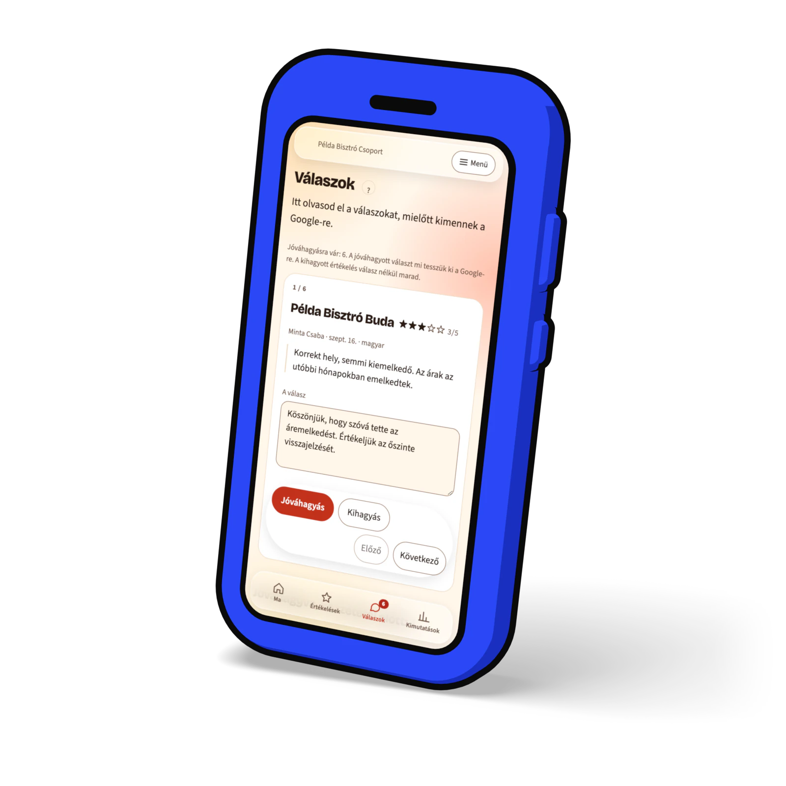
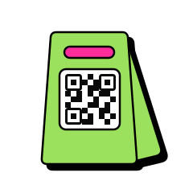
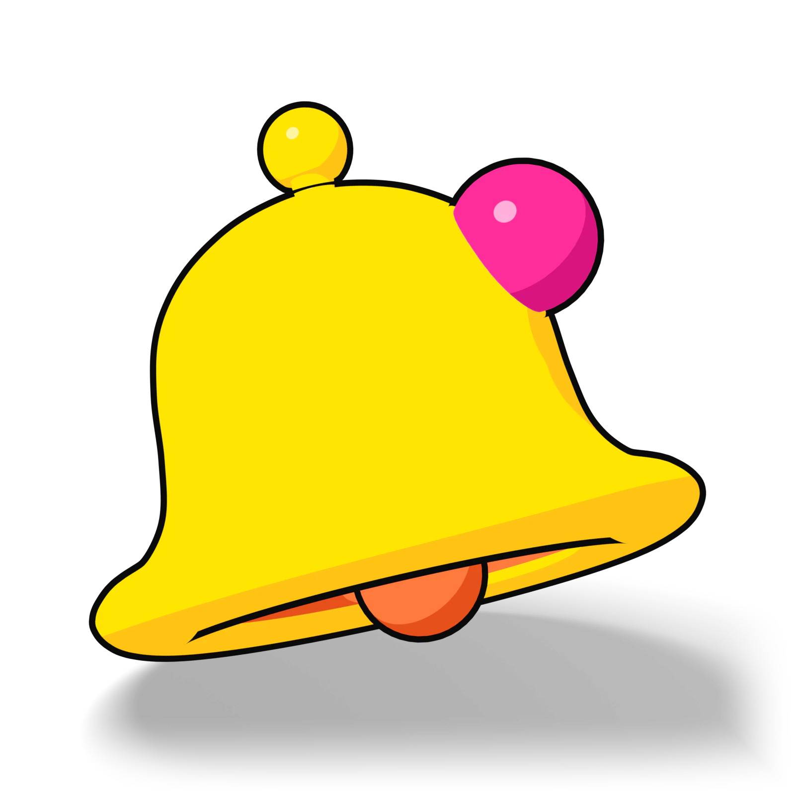
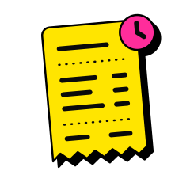

Így készül a BistroTech
Minden, amit kipróbáltunk, mielőtt élesbe ment: az app új arca, a kinézet beállításai, a saját rajzok és a weboldal három iránya. Mind kattintható, telefonon is. A példákban szereplő éttermek és vendégek kitaláltak.
-

Élesben isAz app, Pop stílusban
A napi képernyők: Ma, Értékelések, Válaszok, Kimutatások. Színek, matricák, rajzok, és egy kis ünneplés, ha mindenre válaszoltál.
Megnyitom -

Megjelenés
Stílus, aztán színek, aztán betű: három lépésben választ mindenki saját kinézetet. Minden párosítást ellenőriztünk.
Megnyitom -

Rajzok és 3D
Saját ikonok és rajzok SVG-ben, és Blenderben készült 3D tárgyak ugyanabban a stílusban.
Megnyitom -

A weboldal három iránya
Piac, Pop és Éjjel: ugyanaz a szöveg háromféle ruhában. Ebből lett a Pop.
Megnyitom -

Az arculat egy lapon
Színek, betűk, térközök, formák és ikonok: minden, amiből a BistroTech kinézete áll.
Megnyitom
Élesben
A weboldal és az app már az új arculattal fut. Az apphoz fiók kell, a weboldalt bárki megnézheti.